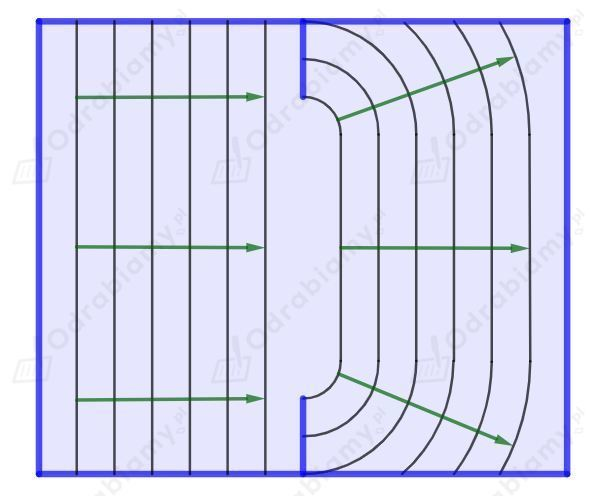
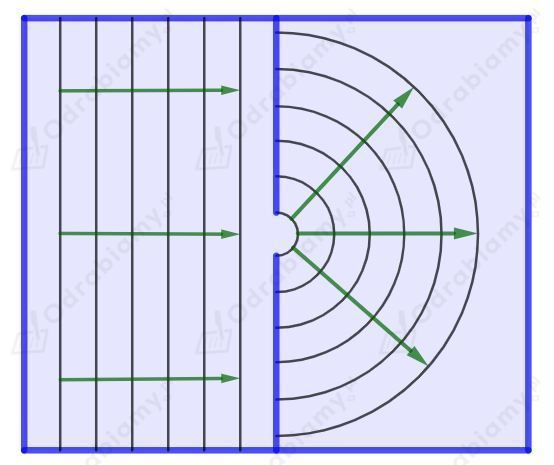

a) Fala za przeszkodą będzie rozchodzić się następująco:

Obserwujemy lekkie ugięcie fali w wyniku dyfrakcji na szerokiej szczelinie.
b) Fala za przeszkodą będzie rozchodzić się następująco:

Obserwujemy silne ugięcie fali w wyniku dyfrakcji na wąskiej szczelinie.
Przez prostą analogię do naszego codziennego życia możemy zauważyć, że do zobaczenia jakiegoś przedmiotu musimy go oświetlić. Łatwo dostrzegamy otaczającą nas rzeczywistość, ponieważ do naszych oczu wpada światło (fotony) odbite od różnych ciał. Kiedy jesteśmy w ciemnym pomieszczeniu używamy latarki - jeśli na coś poświecimy to możemy to zaobserwować.
Podobnie działa mikroskop. Świecimy na dany obiekt i otrzymujemy jego obraz. Jeśli dany obiekt jest oświetlany światłem widzialnym to możemy obserwować jego obraz własnymi oczami. Jeżeli mikroskop używa światła ultrafioletowego, to nie jesteśmy wstanie obserwować obrazu naszymi oczami (widzimy tylko promieniowanie elektromagnetyczne z zakresu światła widzialnego), ale potrafimy zbudować kamery, zdolne do rejestracji szerszego pasma promieniowania elektromagnetycznego. Następnie komputer może przetłumaczyć otrzymywany obraz i wyświetlić go na monitorze.
Po co budujemy mikroskopy wykorzystujące promieniowanie inne niż światło widzialne? Wiemy już, że musimy poświecić na dany obiekt, aby go zobaczyć. Okazuje się, że świecąc na dany obiekt nie zobaczymy obiektów mniejszych niż długość fali, którą go oświetlamy. Dodatkowo żeby otrzymać ostry i niezniekształcony obraz rozmiary obserwowanego obiektu powinny być wielokrotnie większe od stosowanej długości fali. Światło widzialne to fale elektromagnetyczne o długości fali rzędu 10-7 m, a promieniowanie UV ma długość fali rzędu 10-8 m. Podobne rozmiary mają wirusy, więc mikroskop wykorzystujący nadfiolet nie pokaże nam ostrego obrazu wirusa.
Bas to dźwięk niższy od sopranu - częstotliwość dźwięku odpowiadająca basowi jest mniejsza od częstotliwości dźwięku odpowiadającej sopranowi.
Zatem długość fali dźwiękowej odpowiadającej basowi jest większa od długości fali odpowiadającej sopranowi (dla basu długość fali będzie równa kilka-kilkanaście metrów, a dla sopranu kilka-kilkanaście centymetrów).
Dyfrakcję najłatwiej zaobserwować, kiedy rozmiary szczeliny (otwarte okno działa jak szczelina) są zbliżone do długości fali lub od niej mniejsze. Zatem fala dźwiękowa ulega ugięciu w większym stopniu, gdy osoba ta śpiewa basem.